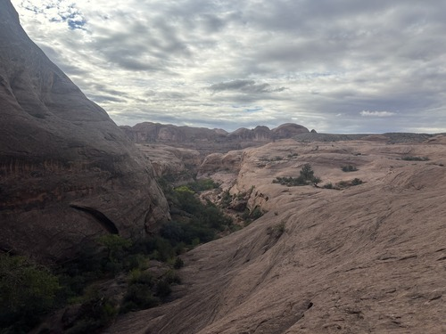

Grand County, Utah, is a wonderful place. It is named after the Grand River (renamed the Colorado River in 1921). It truly is a grand landscape. With sweeping alien red rock and vast life in hidden oases, it has become a hub for adventurers and photographers alike; even Hollywood continues to find its way here to showcase the beauty. Grand County is home to dinosaur and mammoth tracks, Utah's largest national park, and over 2,000 natural arches. Welcome to the land of the extraordinary.

©Riley Dalton
Email Us